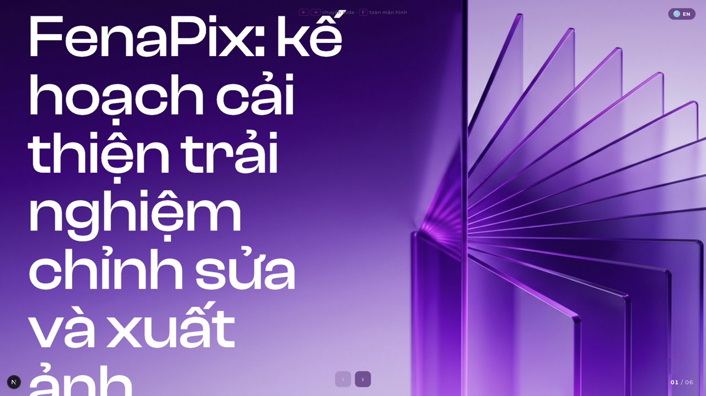
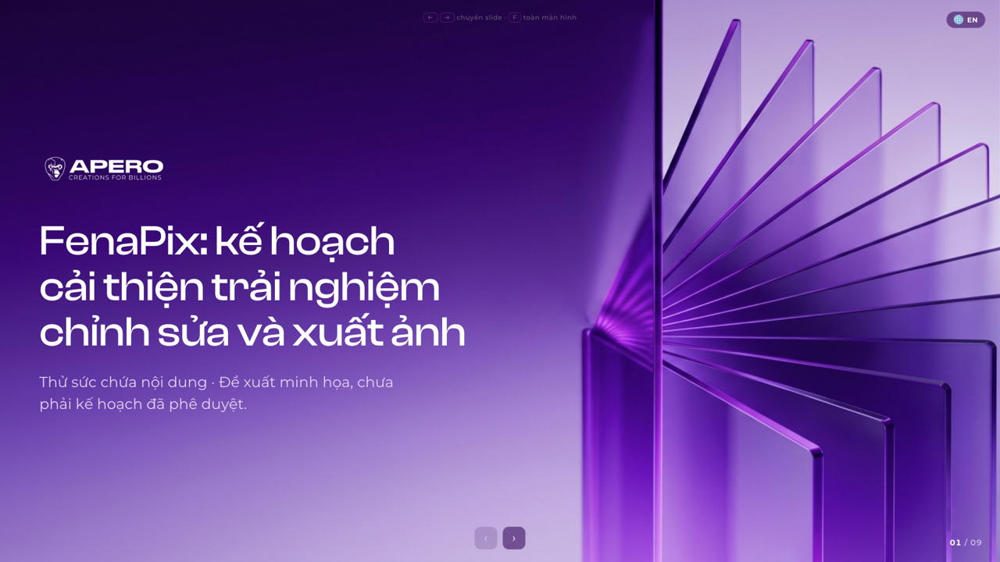
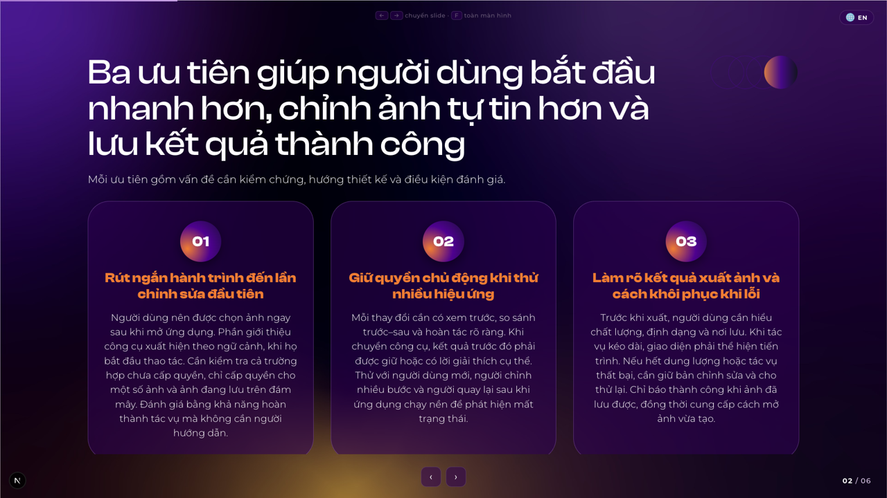
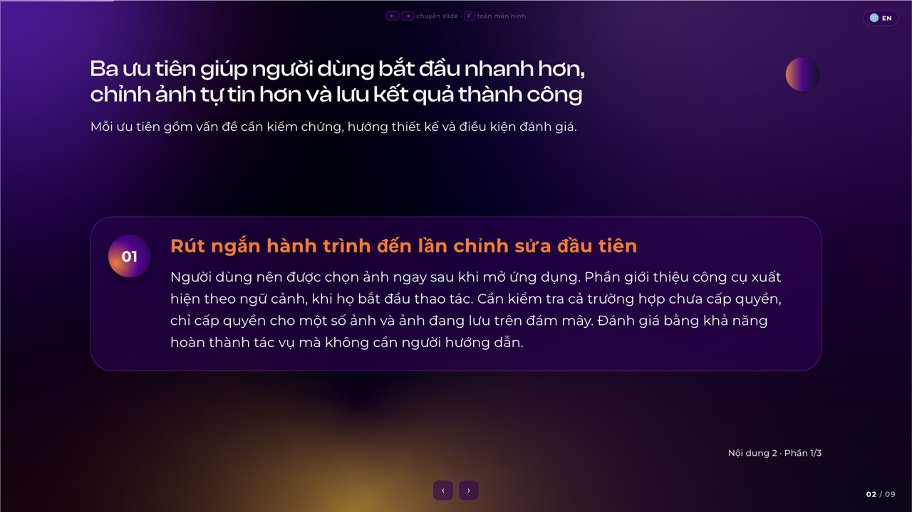
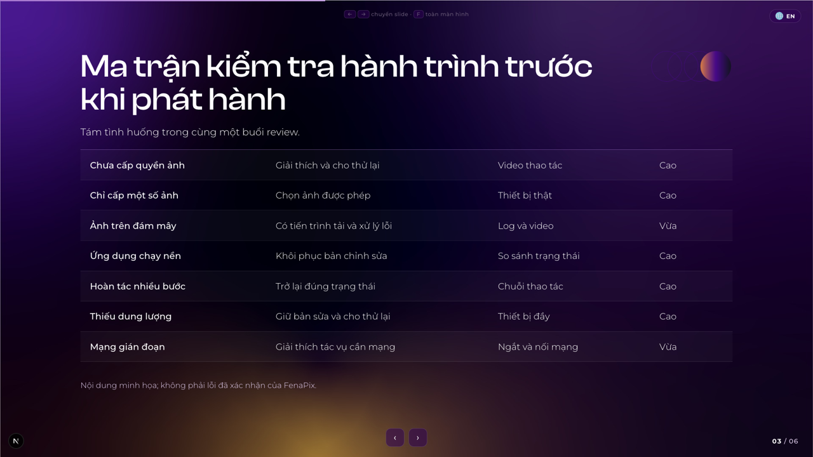
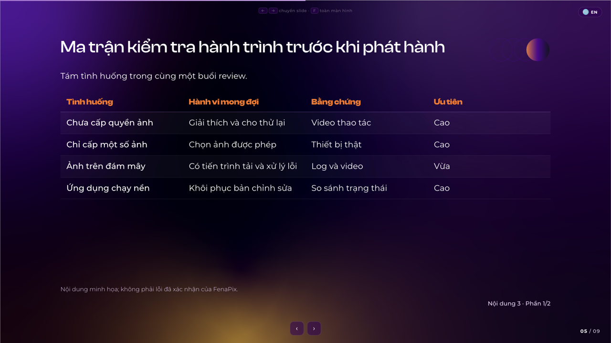
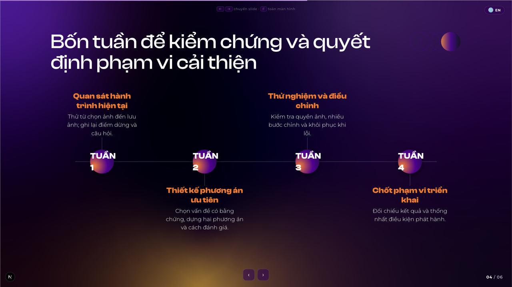
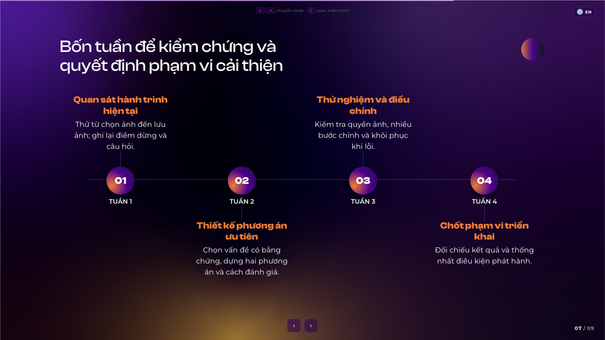
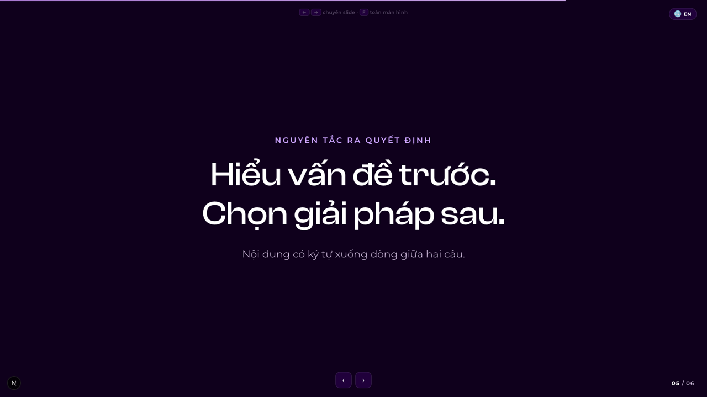
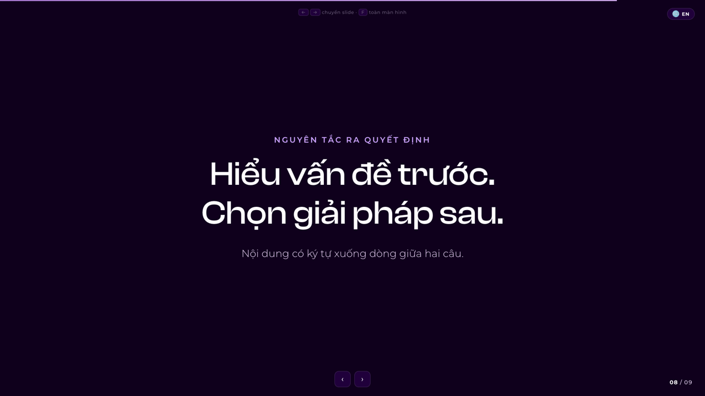

Bài thử “Kế hoạch cải thiện trải nghiệm FenaPix”. Giữ nguyên toàn bộ nội dung của sáu slide gốc; thay cách phân trang và trình bày. Nội dung là minh họa, không phải hiện trạng đã xác nhận của FenaPix.
Giữ nguyên tiêu đề và mô tả. Bố cục dành cho tiêu đề dài dùng cỡ tiêu đề phù hợp, ngắt dòng cân đối và giữ logo trong khung.


Giữ đủ ba ý và toàn bộ nội dung, tách mỗi ý sang một trang. Chữ nội dung tăng từ khoảng 21px / nét 300 lên khoảng 29px / nét 400 tại 1920×1080.


Mỗi trang bốn hàng, lặp tiêu đề cột. Hàng “Xuất ảnh thành công” trước đây bị khuất nay hiện đầy đủ ở phần hai.


Quả cầu chứa 01–04; TUẦN 1–4 nằm riêng bên dưới, không còn nhãn bị ép xuống dòng trong vòng tròn.


Giữ ký tự xuống dòng trong dữ liệu bằng white-space: pre-line. Mẫu trước vốn tự wrap khá giống nên khác biệt thị giác ở trang này nhỏ.


Giữ nguyên câu kêu gọi hành động, cân đối hai dòng và thêm nút “Xem bản so sánh” dẫn tới trang này.